SA06 — Saga Pattern — Microservices Me Distributed Transactions Kaise Sambhale?
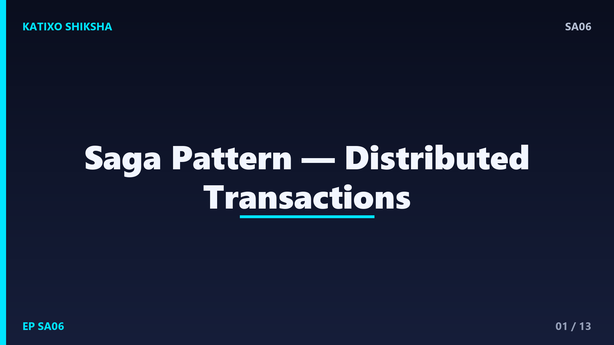
Slide 1दोस्तों, सोचिए आप एक travel app बना रहे हो जहाँ एक booking में flight, hotel और cab — तीनों अलग-अलग microservices हैं. अब flight book हो गई, hotel भी हो गया, पर cab fail हो गई. अब क्या करोगे? पुराने तरीके में एक transaction सब कुछ एक साथ रोलबैक कर देता था, पर microservices में हर service का अपना database है, वो जादू अब नहीं चलता. इसी समस्या का जवाब है Saga pattern. आज Katixo KhojLab की इस episode में हम साफ़ Hinglish में Saga pattern समझेंगे. चलिए शुरू करते हैं।
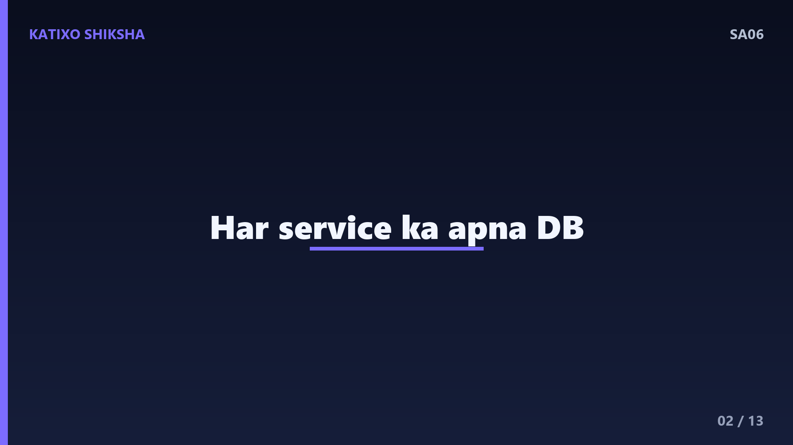
Slide 2पहले problem को ठीक से समझें. एक monolith में जब सब कुछ एक ही database में होता है, तो हम ACID transaction चलाते हैं — या तो सब काम होंगे, या कुछ भी नहीं, यानी all-or-nothing. पर microservices में हर service का अपना अलग database होता है. अब एक ही transaction कई databases पर एक साथ नहीं चल सकती. तो जब एक business operation कई services में फैला हो, और बीच में कोई step fail हो जाए, तो data को consistent कैसे रखें? यही असली चुनौती है.
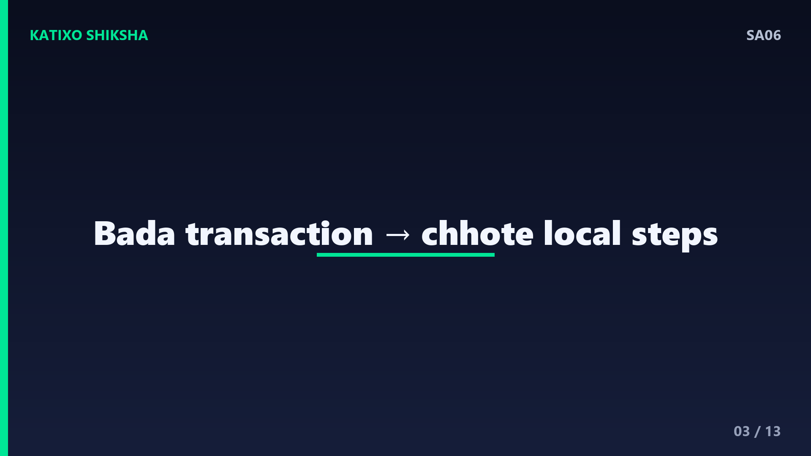
Slide 3अब Saga pattern को परिभाषित करते हैं. Saga एक बड़ी distributed transaction को कई छोटे local transactions की chain में तोड़ देता है. हर service अपना छोटा local transaction चलाती है, और फिर अगली service को signal भेजती है कि अब तुम अपना काम करो. अगर सब steps successful हो जाएँ, तो saga complete. पर अगर बीच में कोई step fail हो जाए, तो saga पीछे की तरफ चलकर हर पहले हो चुके step को undo करता है — special compensating actions के ज़रिए.
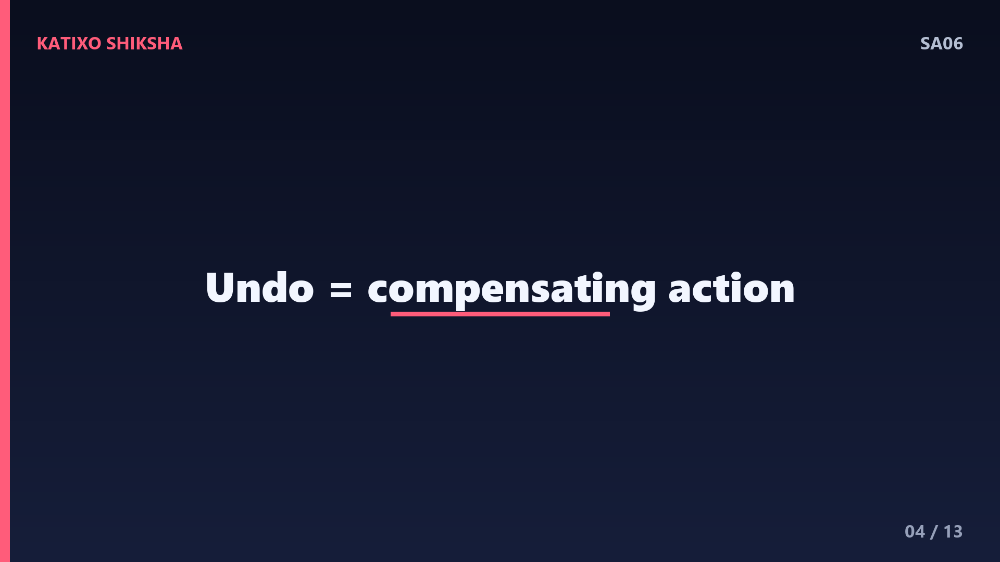
Slide 4अब सबसे important concept — compensating transactions. ध्यान दीजिए, यहाँ rollback नहीं होता, क्योंकि हर local transaction तो commit हो चुका है, data save हो चुका है. इसलिए undo करने के लिए हम उल्टा काम करते हैं. जैसे अगर step था payment charge करना, तो compensating action होगा refund देना. अगर step था hotel book करना, तो compensate करना मतलब वो booking cancel करना. हर forward step के लिए एक उल्टा कदम पहले से तैयार रखना पड़ता है — यही saga की रीढ़ है.
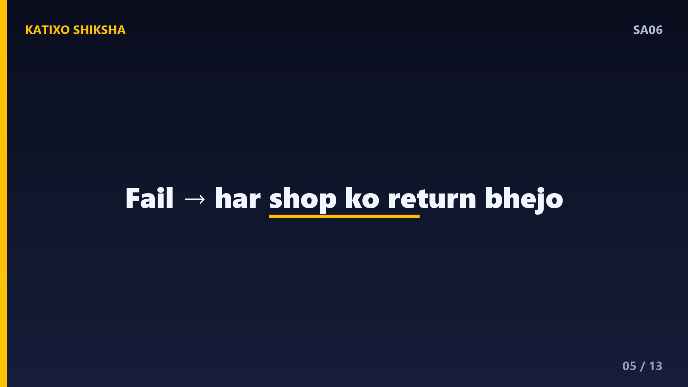
Slide 5इसे एक आसान analogy से समझते हैं. सोचिए आप online shopping में 3 अलग-अलग दुकानों से एक gift set के 3 हिस्से मँगा रहे हो. दो दुकानों ने सामान भेज दिया, पर तीसरी के पास stock ख़त्म. अब आप एक जादू का button नहीं दबा सकते जो सब वापस कर दे. आपको खुद हर दुकान को अलग-अलग return request भेजनी होगी. वो return ही है compensating transaction. Saga यही करता है — fail होने पर हर पहले हो चुके step को सोच-समझकर वापस लेता है.
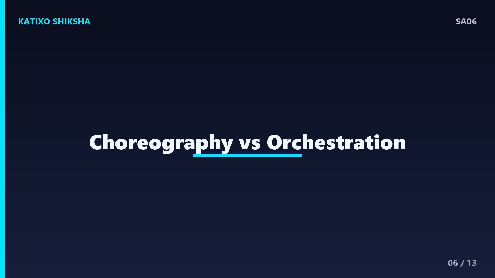
Slide 6अब Saga को implement करने के दो main तरीके हैं, और ये interviews में ज़रूर पूछे जाते हैं. पहला है Choreography और दूसरा है Orchestration. Choreography में कोई central boss नहीं होता — हर service एक event छोड़ती है, और अगली service उस event को सुनकर अपना काम शुरू कर देती है. Orchestration में एक central coordinator होता है, जिसे orchestrator कहते हैं, जो हर service को बारी-बारी आदेश देता है. दोनों के अपने फ़ायदे और नुक़सान हैं — चलिए एक-एक करके देखते हैं.
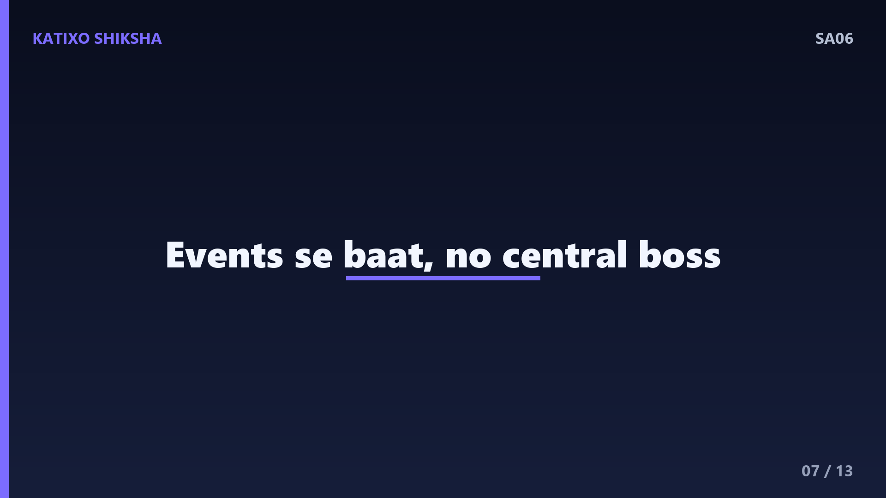
Slide 7पहले Choreography. यहाँ services events के ज़रिए आपस में बात करती हैं, बिना किसी central control के. जैसे Order service एक OrderCreated event छोड़ती है, Payment service उसे सुनकर payment करती है और PaymentDone event छोड़ती है, फिर Shipping service उसे सुनकर आगे बढ़ती है. फ़ायदा — loose coupling, कोई single point of control नहीं. नुक़सान — जब steps बढ़ जाएँ, तो पूरा flow समझना और debug करना मुश्किल हो जाता है, क्योंकि logic कई services में बिखरा होता है.
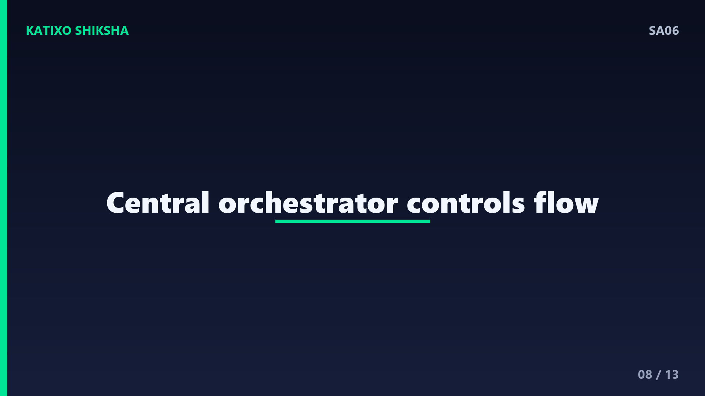
Slide 8अब Orchestration. यहाँ एक central orchestrator पूरी saga को control करता है. वो Payment service को बोलता है — payment करो; जवाब आने पर Inventory service को बोलता है — stock रोको; और ऐसे ही आगे. अगर कोई step fail हो, तो orchestrator खुद decide करता है कि कौन से compensating actions चलाने हैं और किस order में. फ़ायदा — पूरा flow एक जगह साफ़ दिखता है, debug आसान. नुक़सान — orchestrator खुद एक central component है, जिसे सही design ना करो तो ये bottleneck बन सकता है.
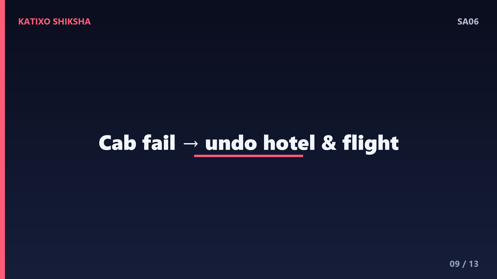
Slide 9अब हमारे travel app वाले example से पूरा flow जोड़ते हैं, orchestration के साथ. Orchestrator बोलता है — flight book करो, हो गई. फिर — hotel book करो, हो गया. फिर — cab book करो, पर cab service ने कहा fail. अब orchestrator compensating chain चालू करता है — पहले hotel booking cancel करो, फिर flight booking cancel करो. अंत में पूरी booking fail मानी जाती है, पर system consistent रहता है — ना आधी-अधूरी booking, ना user का पैसा फँसा. यही saga का असली मक़सद है.
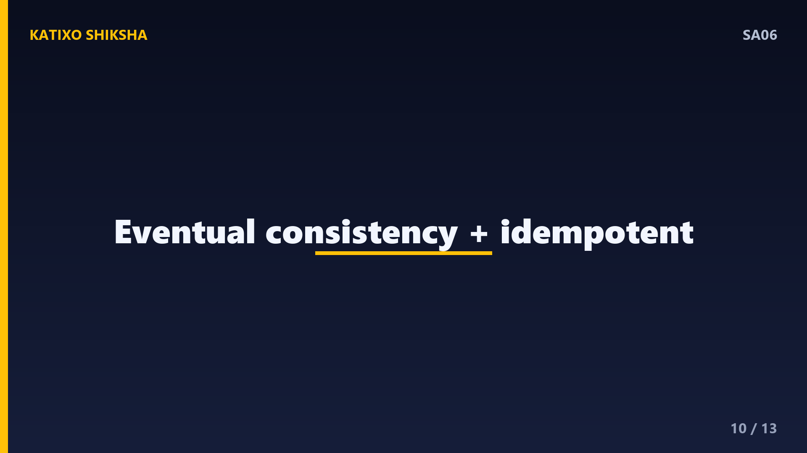
Slide 10अब एक बहुत ज़रूरी बात जो interviews में अलग छाप छोड़ती है. Saga ACID की तरह strong consistency नहीं देता, बल्कि eventual consistency देता है. मतलब कुछ पलों के लिए system थोड़ा बेमेल दिख सकता है — जैसे flight book है पर अभी cancel होनी बाक़ी है. इसलिए हर step को idempotent बनाना ज़रूरी है, यानी एक ही action दोबारा चले तो दिक़्क़त ना हो, क्योंकि retries होते रहते हैं. साथ ही compensating actions को हमेशा reliable होना चाहिए — undo कभी fail नहीं होना चाहिए.
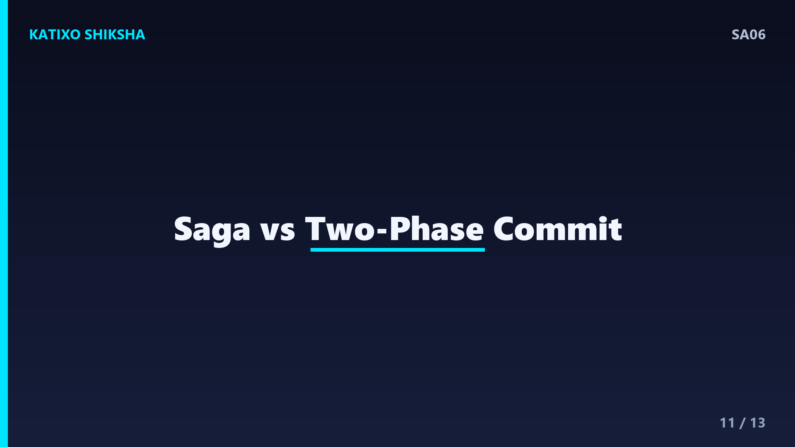
Slide 11अब कब Saga इस्तेमाल करें और interview points. Saga तब use करो जब एक business operation कई microservices में फैला हो और हर की अपनी database हो. छोटे, single-service काम के लिए तो simple local transaction ही काफ़ी है, saga की ज़रूरत नहीं. एक common सवाल — Saga vs Two-Phase Commit. Two-Phase Commit सारी services को lock करके एक साथ commit कराता है, पर ये slow है और scale नहीं करता. Saga locks नहीं लगाता, इसलिए ये microservices के लिए ज़्यादा practical और scalable है.
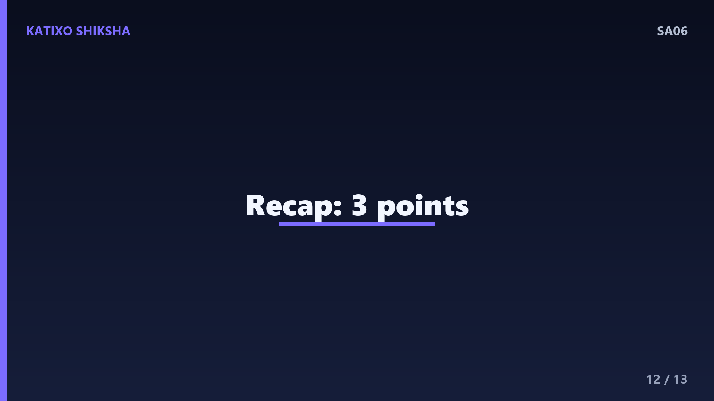
Slide 12तो चलिए एक quick recap कर लेते हैं, तीन points में. पहला — Saga एक बड़ी distributed transaction को कई छोटे local transactions की chain में तोड़ता है, क्योंकि हर microservice का अपना database होता है. दूसरा — fail होने पर rollback नहीं, बल्कि compensating transactions चलते हैं जो हर पहले हो चुके step को उल्टा करके undo करते हैं. तीसरा — दो तरीके हैं, choreography यानी events से और orchestration यानी central coordinator से, और Saga strong नहीं बल्कि eventual consistency देता है.
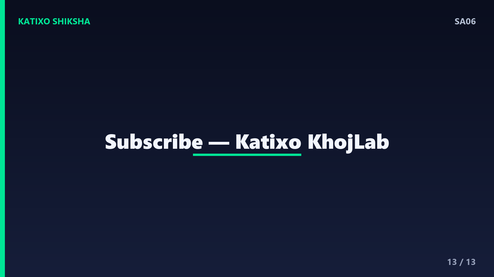
Slide 13तो दोस्तों, आज आपने सीखा कि microservices की दुनिया में जहाँ हर service का अपना database है, वहाँ data को consistent रखने का सबसे practical तरीका है Saga pattern. अगली बार जब interview में distributed transactions का सवाल आए, तो आप confidently saga, compensating transactions, choreography vs orchestration और eventual consistency की बात कर पाओगे. एक बार किसी छोटे order-payment flow को saga के तौर पर design करके देखें, concept गहराई से बैठ जाएगा. Aisi aur system design videos ke liye Katixo KhojLab subscribe karein! मिलते हैं अगली episode में।